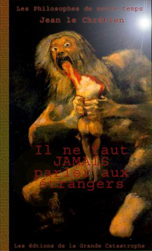

 |
"Si le choux est trop
cher, achetez autre chose. Le gouvernement n'est pas responsable de
ce que vous achetez."
L'occasion d'un Sommet de la Fraternité
pour la suite du monde selon l'Empereur. Un sommet planétaire
qui cherche à trouver le passage vers un sens nouveau. Inoubliable. Il ne faut jamais parler aux étangers,
c'est la parole de tous les humains qui résistent, refusant
de se laisser emporter par les courants qui sacrifient l'existence
dans son essence même. Vivre, c'est aussi la peine de vivre,
sans laquelle aucun lendemain n'est possible. Avec Il ne faut jamais
parler aux étangers, l'Empereur clôt d'une main magistrale
son grand cycle philosophique. Une impressionnante agglomération de lettres
formant une succession de mots. L'assemblage de mots pour en faire
des phrases en fait un document d'une lisibilité remarquable. Encore
une fois l'Empereur innove sur ses écrits précédents. À lire absolument
pour comprendre ce qui y est écrit.
|